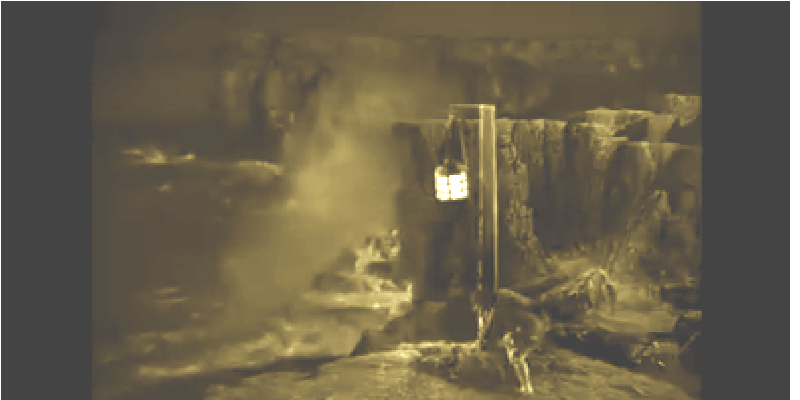

GWERZ PENMARC'H
Kempennet gant Christian Souchon (c) 2006

"La Taverne de la Jamaïque", film d'Alfred Hitchcock, 1939
Première version notée (avant 1891) |
Recueillie à Plogoff en 1890 |
Chantée en 1992 | |
|
THE FLEET OF AUDIERNE - GWERZ OF PENMARC'H 1. Yesteryear on Saint Catherine's day [a] All the fleet sailed from Bordeaux away (twice) 2. In th' harbour anchor when they dropped, Suddenly to blow the wind has stopped.[b] 3. Try as they would, to sail along Wind was missing and was so for long. 4. When they came to Penmarc'h at last, There was blowing wind again enough! [c] 6. - Cheer up, this means: end of our griefs! Winds will help us sail among the reefs... 7. - Reefs, reefs around! Reefs more and more At Penmarc'h for sure we'll run ashore...- 8. - Folks of Penmarc'h, you do no right! Why do you leave your church lit at night? - 5. "A light astern, a light ahead... We're within the fleet all in a thread!"... [d] |
9. Which Christian, say, would not have cried At Penmarc'h, when all these people died? 10. Seeing the billows foam and surge Where the drowning sailormen did merge! 11. Seeing the ocean getting red With the blood the shipwrecked sailors shed! 12. - Who will to Audierne break the news: Only one ship did survive the cruise? 13 - A lugger and none other will, That's the sort of task she can fulfil! 14. A lugger, aye, of Port-Louis: Their sad tale they tried to embellish ..." 15. Their speech was not yet over, when A strong wave had surged and swallowed them... 16. Women of Audierne town, galore, Wearing white sheets came along the shore 17. A hundred widows of Audierne, Wearing a white linen, each of them 18. Asking each other in despair: - Is my husband's body anywhere? |
19. - How could I have heard of your man? To devour him yellow crabs began! - 20. Cruel-hearted whoever had spied The wrecks near Torch Point and had not cried! 21. Seeing these bodies that were swept To La Chaise, Penhors and Plozévet. 22. To Plozévet where on the meads Canvas sails are drying in the breeze. 23. To bless the fields a priest must come We'll make graves for these poor dead therefrom. 24. Old Dreo is a decent man: He tied up his cart to carry them 25. All to St. Peter's Cemetery Two by two, or even three by three. [e] 26. People of Penmarc'h, curse on you Who have kept your church lit, all night through! 27. Of Penmarc'h and of Plozévet Of Penhors, and of La Trinité, 28. You keep lights in your church that may Pull ashore the ships that come that way . |
29. O, people of Penmarc'h be cursed May your fate forever be the worst! [f] A. Among the fleet we are no more: Going straight instead to Pennmarc'h's shore! [g] [h] B. Cursed be Penmarc'h and Plovézet Cursed be Penhors and La Trinité! C. Coming to Penmarc'h to die there! 5.1 A fire in front, a fire in the rear! D. On Saint-Demet, too, my curse be And on the beans of La Trinité! E. A vessel called "The White Sheep" Sailing in the wind Torch Point she reached. G. Jacques Le Liang took up the mission: He would put them all in emotion...[i] [j] Trad. Ch. Souchon (c) 2025 |


NOTES
|
[a] Cette gwerz est repérée sous l'indicatif M-00130 dans la classification Malrieu qui en décompte 6 versions et 14 occurrences. Toutes les versions désignent le jour du drame par "foar / deiz Santez Katell" ="Foire ou Jour de la Sainte-Catherine". La version HLC fait état de 2 dates juxtaposées: Saint-Clément et Sainte-Catherine, soit 23 et 25 novembre. Il s'agit peut-être de la durée du voyage Royan- Penmarc'h, 700 km environ parcourus en 3 jours à une vitesse de 5 noeuds (9 km/h). Royan est à l'embouchure de la Gironde, à la "sortie de la rivière de Bordeaux", comme il est dit au vers 1.2. La version DL précise: "Bremañ bloaz da S.K.", "Cela fera aujourd'hui un an à la sainte-Catherine". On en déduit que la guerz fut composée un an après la tragédie. Aucune version n'indique l'année du drame. [b] Les versions FML et DL précisent que l'absence de vent cloua sur place la flotte dans la "rade" où elle a mouillé. Il s'agit sans doute de la Rade de Poulbras au sud de Penmarc'h (cf. plan de 1771-1785, col.2 ci-dessus). Cette rade est bordée à l'ouest par les redoutables "Etocs" (="ar C'heloù"= les récifs) que l'on décide de contourner ou de traverser de nuit, sans doute par l'un des deux chenaux, celui de la "Jument" ou celui du "Branquet", peut-être en raison du retard accumulé. [c] Y a-t-il eu une tempête? "Banne avel er-bed": "pas une GOUTTE de vent" selon l'expression bretonne. S'agissait-il du calme précédant la tempête et le vers 4.2: "Avel awaic'h o-doe kavet" (Du vent, ils en eurent tant et plus) serait-il empreint d'une ironie amère? On peut en douter quand on entend la version communiquée par Madame Noret d'Ouessant, le 3 août 1906, à l'abbé Jean-Marie Perrot en réponse au concours du "Barzaz Bro-Leon" organisé par ce dernier:(Page 0015-2, chant N° 4 du manuscrit): 4... N'oa ket erruet c'hoazh tost da Penmarc'h Na devoe ar flod avel awalc'h. 6. Ar c'habiten en-deus laret: "Diwallit mat martoloded! 6 bis. An avel zo aes, an nozh zo teñval: Ni a dlefe bezañ a-dost d'an douar. 7. Tan zo a-dreñv, tan zo a-raok... Emaomp o vont a-benn en aod!" "Elle n'était pas encore arrivée près de Penmarc'h/ Que la flotte manqua de vent. Le capitaine a dit: "Faites bien attention, matelots!/ Le vent est léger; il fait nuit noire: Nous devrions être près de la côte./ Un feu derrière, un feu devant... Nous allons droit sur le rivage!" Il n'est pas question de tempête, mais plutôt d'imprudence de la part du capitaine qui dirige la manoeuvre. Selon la feuille Wikipédia consacrée à Penmac'h, d'où est tirée la carte des "Estocs" de 1771 - 1785, la côte était ici très différente de ce qu'elle est aujourdhui. La carte fait état de 3 chenaux que devait emprunter la navigation: la Jument, le Branquet et Toulhec. Notons cependant que cette version exogène ne reflète qu'imparfaitement la version d'origine: On voit le processus de déformation du texte à l'oeuvre dans les strophes: 13. Piv hepken eo a yafe Nemet an nep zo chomet e buhez? au lieu de "... ur chas-mare na rafe" ... 26. Ha mil mallozh da bep Markiz A zalc'h tan en nos en o iliz. au lieu de "...da Benmarc'hiz". (13. "Ne pourrait guère y aller que celui qui resta en vie" (au lieu de "qu'un chasse-marée") et 26 "Malheur à tout marquis..." (au lieu des "...habitants de Penmarc'h"). C'est ce phénomène qui explique l'ambiguïté dont est entachée la strophe 14 qui, chez Luzel, se lit "e doublje an Heloù" (doubler, contourner par le sud les Etocs). Par suite d'une confusion avec "ar c'heloù", "la nouvelle", le même vers devient dans la version DL: "touffiñ ar c'heloù": étouffer, enjoliver, atténuer (?) la nouvelle! [d] "Gouloù a-dreñv, gouloù a-raok" (un feu devant, un feu derrière) résume la méthode de manoeuvre de la flotte la nuit. Nulle part il n'est question dans cette gwerz de bateaux de guerre qui accompagneraient la malheureuse flotte. On n'est donc pas dans le cas d'un de ces "convois de la mer bretons" qui furent organisés par l'ordonnance du 1er juillet 1372 du duc Jean IV, avant d'être abolis par lettres patentes du 20 février 1559. Sous le règne personnel de Louis XIV, Colbert s'efforcera d'inciter les Marseillais à adopter un tel système d'escorte des navires marchands. Mais un certain mémoire de 1672 montre que les Malouins n'étaient pas enclins à ressusciter le convoi abandonné en 1559. Un mémoire des années 1700 nous apprend que le Roi leur avait accordé 4 frégates pour leur servir de convoi depuis Bordeaux jusqu'à Dunquerke et ce système fonctionna avec succès pendant plusieurs années. Puis tout fut supprimé du fait de la guerre de la Ligue d'Augsbourg (1688-1697). [e] Datation de la gwerz par Gilles Goyat: Lors d'un spectacle audio-visuel donné à La chapelle de La Madeleine (entre les hameaux de Lescors et Lestrigou, au nord est de Penmarc'h) le 23.10.2011, le linguiste natif de Plozévet, Gilles Goyat, tente de répondre à cette question. Partant de la constatation qu'il n'y a pas de différences majeures d'une version à l'autre, il affirme que la gwerz parle d'une erreur de navigation et non de piratage et qu'elle se fait l'écho de rapports hostiles entre deux communautés de marins, ceux d'Audierne et ceux de Penmarc'h. Il comprend, comme nous, que la Sainte-Catherine est le jour du drame, non celui du départ de la flotte de la Gironde (cf. version HLC str. 1). Il note que les versions collectées localement indiquent précisément le trajet suivi par la flotte pour doubler la Pointe de Penmarc'h et le nom de l'homme qui a prêté sa charrette pour enlever les corps: Le Dréo (DL str. 24). La version HLC recueillie à Plogoff donne le nom du seul navire rescapé, "ar Maoutenn gwenn", le "Mouton blanc" qui tint le vent jusqu'à La Torche (HLC, str. F) et celui de son capitaine qui alla prévenir les familles d'Audierne: Jacques Le Liang (str. G). En revanche il note que le nombre de veuves d'Audierne indiqué strophe 17, cent ou 147, est un des ces nombres-clichés qu'affectionnent les gwerzioù, non le résultat d'un décompte exact. Gilles Goyat, bien qu'il n'écarte pas la datation proposée par Donatien Laurent: 14 ème ou 15ème siècle, pense sans doute à une date plus récente: il indique que le drame "ne peut être postérieur au 16ème siècle qui voit la fin du moyen-breton". D'où l'on déduit que ce linguiste décèle dans ce texte, tel qu'il a été transmis, a conservé des traits caractéristiques de cet état ancien de la langue. Une autre marque d'ancienneté: la mélodie , un "pentacorde" qui n'utilise que 5 notes: re, mi, fa sol, la. Elle est dédiée à ce texte. (Gilles Goyat cite une autre mélodie à 7 notes dont il dit qu'elle n'est que médiocrement adaptée aux octosyllabes du poème). [f] Intention criminelle?: Si l'auteur de la gwerz reproche aux gens de Penmarc'h de laisser imprudemment de la lumière allumée la nuit dans leur église (str. 8 et 26), seule la version de Donatien Laurent (DL) leur prête une intention criminelle: str. 28, "VIT ma yel d'an aod batimañchoù", "POUR attirer vers le rivage les bateaux". Gilles Goyat explique que la malédiction (et le grief de manoeuvre criminelle, dans la version DL) soit étendue aux habitants de Penhors et de Plozévet (La Trinité et Saint-Dévet), str. 8, B, 26, 27 et 28, par le fait que leurs clochers devaient servir d'amers aux marins. De plus Penhors et La Trinité avaient des pardons annuels qui attiraient une foule de pèlerins. Mais ce n'est que pour les habitants de Penmarc'h dont la côte est bordée de rochers que l'auteur de la gwerz demande à Dieu la damnation éternelle. [g] Datation de la gwerz par Aline Cosquer : La 2ème intervenante à la conférence de La Madeleine, l'historienne Aline Cosquer, écarte l'époque de la guerre de cent ans (1337-1453) pendant laquelle les Anglais monopolisaient le commerce des vins de Bordeaux. De plus, pendant cette période, un convoi non armé est impensable. Après 1453, Tréoultré devient un lieu de mouillage pour de nombreux bateaux qui s’arrêtent dans les Etocs, ou entre les Etocs et la côte. Entre 1500 et 1520, il peut y avoir ici jusqu'à 300 bateaux à l'arrêt. "On peut donc difficilement imaginer qu’un tel drame ait pu se produire dans cet ensemble de bateaux, avec la côte très peuplée et toute proche". Madame Cosquer en conclut que ce convoi a dû avoir lieu avant la guerre de cent ans, "dans la 1ère moitié du 14ème siècle". Elle précise même l'année: « 1308-1309 marque avec 129 bateaux bretons le record séculaire du commerce vinicole breton." Elle précise, en se basant sur la moyenne des cargaisons des bateaux de pêche transformés en bateaux de transport et sur le nombre de veuves, sachant qu'un équipage était constitué d'une quinzaine de matelots, que la flotte devait être constituée de 10 à 15 bateaux. Elle ne pense pas que le chasse-marée visé à la strophe 13 des versions FML et DL ait eu pour mission de protéger le convoi. Enfin la gwerz confirme l'existence d'un cimetière Saint-Pierre attestée par les textes,les fouilles et la tradition orale. Il recevait les étrangers à la paroisse qui ne pouvaient être enterrés dans ou autour de l'église paroissiale. [h] Datation de la gwerz par l'abbé François Quiniou: Cette datation contredit celle de François Quiniou, recteur de Penmarc'h, qui fit paraître un article intitulé "Penmarc'h, piraterie et naufrages" dans le "Bulletin Diocésain d'Histoire et d'Archéologie", 1925, pp. 74-86. Il conclut son exposé en évoquant la gwerz de Penmarc'h: "A une date incertaine et que l'on a fixée de façon assez arbitraire à la 1ère moitié du 17ème siècle, toute la flotte d'Audierne ... fut brisée en une seule nuit sur les récifs de Penmarc'h..." [i] Arguments en faveur d'une datation plus récente: On peut invoquer à l'encontre des datations qui confèrent à cet événement une telle ancienneté les arguments suivants: [j] Naufrages provoqués: Cette complainte a inspiré la sarcastique gwerz publiée en 1939 par le chanoine Pérennès, Le bateau naufragé. Il serait intéressant de savoir si la femme de lettres britannique Daphné du Maurier (1907-1989) connaissait cette gwerz. Son roman "l'Auberge de La Jamaïque" met en scène des naufrageurs de Cornouailles qui se servent de lanternes pour provoquer la perte de navires qu'ils pillent après avoir occis les rescapés. Alfred Hitchcock en a tiré un film du même nom avec Charles Laughton et Maureen O'Hara. Les habitants du littoral bigouden n'étaient sans doute pas des naufrageurs, mais on ne peut exclure qu'ils récupéraient sans trop de scrupules les cargaisons poussées par les courants le long de leurs côtes, sorties des bateaux qui faisaient naufrage "e-tal Penmarc'h" (devant Penmarc'h)! On entendra ci-après la gwerz interprêtée par un groupe vocal de la région qui n'a pas craint de s'intituler "Les Naufrageurs bigoudens"! |
[a] This gwerz is given code M-00130 in the Malrieu index system, which records 6 versions and 14 occurrences of it. All versions state the day of the tragedy as "foar / deiz Santez Katell" = Fair or Day of Saint Catherine. The HLC version juxtaposes 2 dates: Saint-Clément and Saint-Catherine, namely November 23 and 25. This may be the duration of the Royan-Penmarc'h journey, approximately 700 km covered in 3 days at a speed of 5 knots (9 km/h). Royan is at the mouth of the Gironde, the "Bordeaux River," as stated in line 1.2. The DL version states: "Bremañ bloaz da S.K.", "It happened one year ago on Saint Catherine's Day." This suggests that the guerz was composed a year after the tragedy. No version hints at the year of the drama. [b] The FML and DL versions specify that lack of wind pinned the fleet to the "harbour" where it anchored. This was probably the so-called Poulbras Harbour, south of Penmarc'h (see above map of 1771-1785, col. 2). This harbour is bordered to the west by the formidable "Etocs" (="ar C'heloù" = the reefs) which it was decided to bypass or cross at night, probably via one of the two channels, "the Mare" or "the Branquet" channel, perhaps to catch up the accumulated delay. [c] Was there a storm? "Banne avel er-bed": "not a DROP of wind" according to the Breton expression. Was this the calm before the storm, and was verse 4.2: "Avel awalc'h o-doe kavet" (They had plenty of wind, indeed ) blended with bitter irony? We may doubt it, considering the version contributed by Madame Noret of Ushant Island, on August 3, 1906, to Father Jean-Marie Perrot in response to the "Barzaz Bro-Leon" competition he organized: (Page 0015-2, song No. 4 of the manuscript): 4... N'oa ket erruet c'hoazh tost da Benmarc'h Na-devoe ar flod avel awalc'h. 6. Ar c’habiten en-deus laret: "Diwallit mat martoloded! 6bis. An avel zo aes, an nozh zo teñval: Ni 'dlefe bezañ a-dost d’an douar. 7. Tan zo a-dreñv, tan zo a-raok... Emaomp o vont a-benn en aod!" "They hadn't yet come near Penmarc'h/ When the fleet ran out of wind. The captain said: "Attention, sailors!/ The wind is light; it's pitch black: We shall keep close to the coast./ A light astern, a light ahead... But, we're heading straight for shore!" This is not a story about storm. It was rather recklessness on the part of the captain directing the maneuver that caused the disaster. According to the Wikipedia page dedicated to Penmac'h, from which the above "Estocs" map of 1771-1785 is taken, the coast here was very different from what it is today. The map shows three channels that vessels might use: the Mare, Branquet, and Toulhec channels. It should be noted, however, that this exogenous version only imperfectly reflects the original version: We see the process of textual deformation at work in the stanzas: 13. Piv hepken eo a yafe Nemet an nep zo chomet e buhez? instead of "... ur chas-mare na rafe" ... 26. Ha mil mallozh da bep Markiz A zalc'h tan en nos en o iliz. instead of "...da Benmarc'hiz" (13. "Only the one who remained alive may go there" (instead of "except a chasse-marée") and 26 "Woe to every marquis..." (instead of the "...inhabitants of Penmarc'h"). This phenomenon explains the ambiguity that marred stanza 14, which, in Luzel's version, reads "e doublje an Heloù" (to go around the Etocs from the south). Due to confusion with "ar c'heloù", "the news", the same verse becomes in the DL version: "touffiñ ar c'heloù": to smooth, embellish, attenuate (?) the news! [d] "Gouloù a-dreñv, gouloù a-raok" (one fire in front, one fire behind) summarizes the fleet's method of maneuvering at night. Nowhere in this gwerz is there any mention of warships accompanying the unfortunate fleet. Therefore this is not a song about one of those "Breton sea convoys" instored by the Ordonnance of July 1, 1372 issued by Duke John IV, which were carried out until they were abolished by letters patent of February 20, 1559. During the personal reign of Louis XIV, Colbert endeavoured to encourage merchant ships of Marseille to adopt such a system of escorting. But a memoir from 1672 shows that the Malouins were not inclined to resurrect the convoys abandoned in 1559. It appears from a memoir dating to the 1700s that the King had granted them four frigates to escort convoys from Bordeaux to Dunquerke, and this system worked successfully for several years. Then everything was abolished because of the War of the League of Augsburg (1688-1697). [e] Assigning a date to the gwerz: Gilles Goyat's view. During an audiovisual performance given at La Madeleine church (between the villages Lescors and Lestrigou, northeast of Penmarc'h) on October 23, 2011, the linguist and native of Plozévet, Gilles Goyat, attempted to date this gwerz. Since there are no major differences between the individual versions, he asserts that the gwerz reports a navigational error, not an act of piracy. Furthermore the song echoes a hostile relationship between two communities: the sailors of Audierne and those of Penmarc'h. He understands, as we do, that Saint Catherine's Day is the day of the tragedy, not of the fleet's departure from the Gironde (see HLC version str. 1). He notes that the locally collected versions describe precisely the route taken by the fleet to get to Penmarc'h Point and mentions the name of the man who lent his cart to remove the bodies: Le Dréo (DL str. 24). The HLC version collected in Plogoff names the only surviving ship, "Ar Maoutenn gwenn," "The White sheep" which held the wind as far as La Torche point (HLC, str. F), and the captain who went to warn the families of Audierne: "Jacques Le Liang" (str. G). However, he notes that the number of widows of Audierne stated in stanza 17, one hundred or 147, is one of those clichéd numbers favoured by the gwerzioù, not the result of an exact asset. Gilles Goyat, although he does not rule out the dating proposed by Donatien Laurent: "14th or 15th century," probably suggests a more recent date. He states that the tragedy "could not take place later than in the 16th century," when Middle Breton ceased to be spoken. From which we infer that this linguist detects in this text, such as it has been handed down to us, characteristic features of this ancient state of language which have been preserved over time. Another mark of antiquity: the melody, a "pentachord" that uses only 5 notes: D, E, F, G, A which is dedicated to this text. (Gilles Goyat cites another 7-note melody that he says is only poorly suited to the poem's octosyllables). [f] Criminal intent?: While the author of the gwerz accuses the people of Penmarc'h of recklessly leaving a light on at night in their church (str. 8 and 26), only Donatien Laurent's version (DL) attributes criminal intent to them: str. 28, "VIT ma yel dan aod batimañchoù", "IN ORDER TO attract boats to the shore." Gilles Goyat explains that the curse (and the charge of criminal maneuver, in the DL version) is extended to the inhabitants of Penhors and Plozévet (La Trinité and Saint-Dévet), str. 8, B, 26, 27, and 28, by the fact that their bell towers served as landmarks for sailors. Moreover, Penhors and La Trinité had annual pardons that attracted crowds of pilgrims. But it is only for the inhabitants of Penmarc'h, whose coast is bordered by rocks, that the author of the gwerz asks God for eternal damnation. [g] Dating the gwerz by Aline Cosquer: The second speaker at the La Madeleine conference, historian Aline Cosquer, ruled out the period of the Hundred Years' War (1337-1453), during which the English monopolized the Bordeaux wine trade. Moreover, during this period they could not imagine a convoy without a warship escort. After 1453, Tréoultré became an anchorage for many ships that stopped in the Etocs, or between the Etocs and the coast. Between 1500 and 1520, there may have been, at a time, as many as 300 ships at anchor here. "It is therefore difficult to imagine that such a tragedy could have occurred within this cluster of boats, with the densely populated coast so close by." Madame Cosquer concludes that this convoy must have taken place before the Hundred Years' War, "in the first half of the 14th century." She even specifies the year: "1308-1309 marks, with 129 Breton boats, the secular record for Breton wine trade." She specifies, based on the average cargo of fishing boats converted into transport vessels and the number of widows, knowing that a crew consisted of around fifteen sailors, that the fleet must have consisted of 10 to 15 boats. She does not believe that the "chasse-marée" referred to in stanza 13 of the FML and DL versions was intended to protect the convoy. Finally, the gwerz confirms the existence of a Saint-Pierre cemetery attested by texts, excavations, and oral tradition. It accommodated strangers to the parish who could not be buried in or around the parish church. [h] Dating of the gwerz by François Quiniou: Madame Cosquer's dating contradicts that of Rev. François Quiniou, rector of Penmarc'h, who published an article entitled "Penmarc'h, piracy and shipwrecks" in the "Diocesan Bulletin of History and Archaeology", 1925, pp. 74-86. He concludes his presentation by mentioning the Penmarc'h gwerz: "On an uncertain date, which has been set rather arbitrarily to the first half of the 17th century, the entire Audierne fleet... was smashed in a single night on the reefs of Penmarc'h..." [i] Arguments in support of a more recent date: The following arguments can be raised against these datings: [j] Shipwrecks caused: This lament inspired the sarcastic gwerz published in 1939 by Canon Pérennès, The Shipwrecked Boat. It would be interesting to know if the British writer Daphne du Maurier (1907-1989) was familiar with this gwerz. Her novel "The Jamaica Inn" features Cornish shipwreckers who use lanterns to cause the sinking of ships, which they then plunder after killing the survivors. Alfred Hitchcock made a film of the same name from it, starring Charles Laughton and Maureen O'Hara. The inhabitants of the Bigouden coast were probably not shipwreckers, but it cannot be ruled out that they looted without much scruples the cargoes pushed by the currents along their shores, taken from ships that had sunk "e-tal Penmarc'h" (off Penmarc'h)! Below, you may hear the gwerz performed by a vocal group from these parts who were not afraid to call themselves "Les Naufrageurs bigoudens"! |
"La gwerz de Penmarc'h" interprêtée par les "Naufrageurs bigoudens" (!?)
* Taolenn*